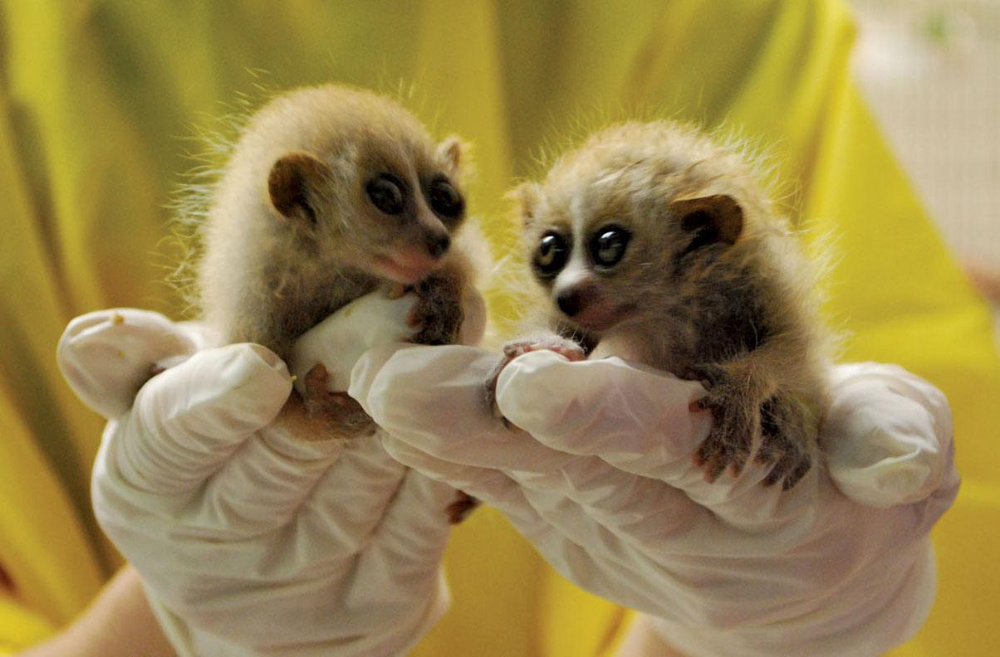
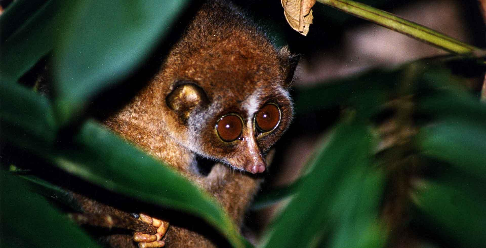
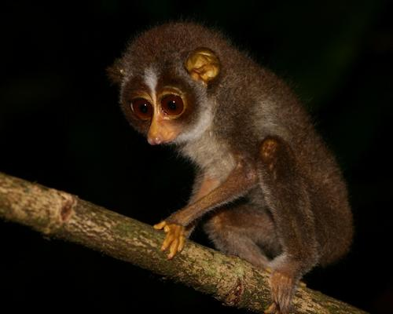
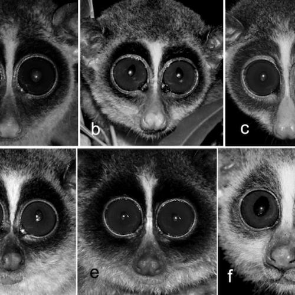

SRI LANKAN RED SLENDER LORIS

The red slender loris has extremely thin arms and legs and is arboreal (tree dwelling). Its face is dominated by huge round eyes which give it excellent night vision and enable it to hunt for insects during the night. There are only two species in its genus, Loris. The slender loris last shared a common ancestor with slow lorises, sister genera in the family Lorisidae over 26 million years ago!
The red slender loris has two subspecies, Loris tardigradus tardigradu and Loris tardigradus nycticeboides, they are split by their differing habitats, with the later living in highlands of Sri Lanka, contrasting with the inter-monsoon and tropical rainforests of the wet zone of Sri Lanka the former inhabits. They are threatened by habitat loss, road kill, and hunting for the pet trade, traditional ‘medicine’, and superstitious killing.
This species is listed on CITES Appendix II but further habitat management and monitoring is required.
PHYSICAL DESCRIPTION
Spp. tardigradus is reddish brown in the back and creamy yellow below while spp. nycticeboides is dorsally brown and ventrally very light brown. The ears are less prominent in the red slender lorises compared to the grey slender lorises. Ears of the spp. nycticeboides are almost invisible since they are hidden beneath a coat of thick fur. The limbs of spp. nycticeboides are shorter and stouter than any other Sri Lankan loris species, and its skull is comparatively larger. The young ones are grayish in both subspecies of red slender loris. Changes in colour occur after about a year.


BIOLOGY
The species has only been observed to eat animal prey in natural habitats. They eat fruit in captive settings, but priority is given to the animal prey. It feeds upon insects (including moths, stick insects, dragonflies, beetles, cockroaches and grasshoppers), lizards, geckos and frogs. Spp. nycticeboides may possibly be more carnivorous than spp. tardigradus.
Habitat and Distribution
Subspecies tardigradus is found in wet lowland forests, tropical rainforests, swampy coastal and evergreen forests, and wet zone lowland forests up to 470 m.
The forests where it occurs have been classified as cloud forest, montane forest and evergreen forest at altitudes greater than 1,500 m, from 1,650 to 2,000 m.
Spp. tardigradus can be found in the Low Country Wet Zone including Kottawa forest, Sinharaja forest reserve, Kanneliya forest (carries the highest density), Morapitiya, Gampaha, Rakwana, Kalutara District, Koggala, Hiniduma, Kithulgala, Masmullakelle (Matara District) and Mathugama. Appearance of spp. tardigradus has also been recorded from Chilaw.
Spp. nycticeboides occur in Up Country forests between 1,600-2,100m altitude, including forests in Horton Plains National Park, Hakgala Strict Nature Reserve, Conical Hill Forest (Nuwara Eliya), Blackpool area, Bomburella Forest and Knuckles Range.


Threats and Conservation
Both of the subspecies are considered Endangered in the Global Red List and categorised under Vulnerable in the National Red List of 2012. Major threats for both subspecies are habitat conversion, habitat destruction and hunting for trade. The red slender loris is listed in CITES Appendix II and also nationally protected by the Fauna and Flora Protection Ordinance Act No. 2, 1937, and its subsequent amendments.
Scientific research on Sri Lanka’s lorises still consists of only a handful.